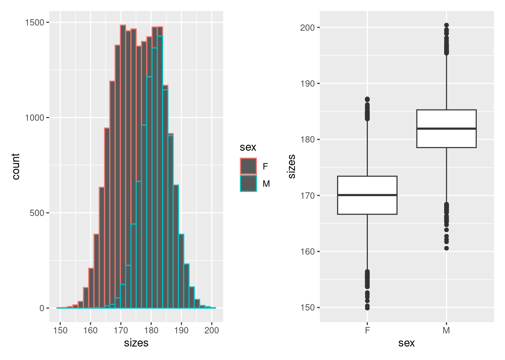

Likelihood refers to how probable a specific set of data is under a given model. It quantifies the model�s ability to explain the observed data. Maximizing the likelihood helps estimate the parameters that make the observed data most probable (used in maximum likelihood estimation).
fitdistr and AIC
fitdistr (in MASS package): Fits a distribution to data by estimating its parameters using maximum likelihood estimation. It’s useful for modeling and checking which distribution best matches your data.
AIC (Akaike Information Criterion): Measures the relative quality of statistical models, balancing model fit and complexity. A lower AIC indicates a model that better explains the data with fewer parameters.
mean sd
20.7820833 10.5987949
( 0.3059609) ( 0.2163470)
likelihood <-prod(dnorm(gutten$dbh.cm,mean = fit_norm$estimate[1],sd = fit_norm$estimate[2])) # Cannot be calculated like this by a computer --> is 0likelihood <-sum(log(dnorm(gutten$dbh.cm,mean = fit_norm$estimate[1],sd = fit_norm$estimate[2]) ))likelihood
A regression describes the quantitative relationship between one or more predictor variables and a response variable. Here a distribution is again fitted to the measured data. However, a predictor effects certain parameters of the distribution. For example, we have three factors in our dataset: genotype, time and treatment. Moreover, we want to predict the CO2 uptake rate (our response variable). Furthermore, we assume normally distributed values. CO2uptake ~ N(µ = a + bgenotype + ctime + d*treatment, �)
The link function/scala
Often distributions have only a certain interval in which they are defined. However, if a predictor takes values which are outside of the interval,. we need to transform the predictor to a new scale. This is the task of the link function.
distributions
link_functions
Normal
Identity
Poisson
Log
Binomial
Logit (ln(y / (1 - y))
Gamma
Inverse
Negative Binomial
Log
df <-data.frame(sizes =c(rnorm(10000, mean =170, sd =5), rnorm(10000, mean =182, sd =5)),sex =rep(c("F", "M"), each =10000))p1 <-ggplot(df, aes(x = sizes, colour = sex)) +geom_histogram()p2 <-ggplot(df, aes(y = sizes, x = sex)) +geom_boxplot()library(patchwork)
Attaching package: 'patchwork'
The following object is masked from 'package:MASS':
area
p1 + p2
`stat_bin()` using `bins = 30`. Pick better value with `binwidth`.

m <-glm(sizes ~1, data = df, family ="gaussian")cat("Base model: Fit the distribution to the data\n","y = N(µ, �)\n")
Base model: Fit the distribution to the data
y = N(µ, �)
summary(m)
Call:
glm(formula = sizes ~ 1, family = "gaussian", data = df)
Coefficients:
Estimate Std. Error t value Pr(>|t|)
(Intercept) 175.96400 0.05499 3200 <2e-16 ***
---
Signif. codes: 0 '***' 0.001 '**' 0.01 '*' 0.05 '.' 0.1 ' ' 1
(Dispersion parameter for gaussian family taken to be 60.47289)
Null deviance: 1209397 on 19999 degrees of freedom
Residual deviance: 1209397 on 19999 degrees of freedom
AIC: 138804
Number of Fisher Scoring iterations: 2
cat("Model: which considers the sex\n","y = N(µ = a*F + b*M, �)\n")
Model: which considers the sex
y = N(µ = a*F + b*M, �)
m <-glm(sizes ~ sex, data = df, family ="gaussian")summary(m)
Call:
glm(formula = sizes ~ sex, family = "gaussian", data = df)
Coefficients:
Estimate Std. Error t value Pr(>|t|)
(Intercept) 170.02331 0.05018 3388.2 <2e-16 ***
sexM 11.88137 0.07097 167.4 <2e-16 ***
---
Signif. codes: 0 '***' 0.001 '**' 0.01 '*' 0.05 '.' 0.1 ' ' 1
(Dispersion parameter for gaussian family taken to be 25.18066)
Null deviance: 1209397 on 19999 degrees of freedom
Residual deviance: 503563 on 19998 degrees of freedom
AIC: 121283
Number of Fisher Scoring iterations: 2
# By hand# Fit a normal distribution to the data without considering the sexfit_base <-fitdistr(df$sizes, "normal")mean_base <- fit_base$estimate[1]sd_base <- fit_base$estimate[2]# Calculate log-likelihood for the base modellog_likelihood_base <-sum(log(dnorm(df$sizes, mean = mean_base, sd = sd_base)))log_likelihood_base
[1] -69400.22
# Fit separate distributions for each groupfit_female <-fitdistr(df$sizes[df$sex =="F"], "normal")mean_female <- fit_female$estimate[1]sd_female <- fit_female$estimate[2]fit_male <-fitdistr(df$sizes[df$sex =="M"], "normal")mean_male <- fit_male$estimate[1]sd_male <- fit_male$estimate[2]# Calculate log-likelihood for the model considering sexlog_likelihood_female <-sum(log(dnorm(df$sizes[df$sex =="F"], mean = mean_female, sd = sd_female)))log_likelihood_male <-sum(log(dnorm(df$sizes[df$sex =="M"], mean = mean_male, sd = sd_male)))log_likelihood_total <- log_likelihood_female + log_likelihood_malelog_likelihood_total
[1] -60638.17
cat("Log-likelihood of the base model:", log_likelihood_base, "\n")
Log-likelihood of the base model: -69400.22
cat("Log-likelihood of the model considering sex:", log_likelihood_total, "\n")
Log-likelihood of the model considering sex: -60638.17
Constructing a Regression Model by Hand
1. Formulate the Regression Equation
Suppose you’re constructing a simple linear regression model for a response variable \(Y\) with a single predictor \(X\). The model would be: \[
Y_i = \beta_0 + \beta_1 X_i + \epsilon_i
\] where: - \(\beta_0\) is the intercept, - \(\beta_1\) is the slope coefficient, - \(\epsilon_i\) is the error term assumed to be normally distributed with mean 0 and variance \(\sigma^2\).
2. Set Up the Design Matrix
For a model with \(n\) observations: - Create a matrix \(X\) for the predictors, which includes a column of 1s for the intercept: \[
X = \begin{bmatrix}
1 & X_1 \\
1 & X_2 \\
\vdots & \vdots \\
1 & X_n \\
\end{bmatrix}
\]
3. Estimate the Coefficients
The least squares estimates \(\hat{\beta}\) can be found using: \[
\hat{\beta} = (X^T X)^{-1} X^T Y
\]
Compute \(\hat{\beta}\): \[
\hat{\beta} = (X^T X)^{-1} X^T Y
\]
4. Compute Residuals
Calculate residuals \(\hat{\epsilon}_i = Y_i - \hat{Y}_i\), where \(\hat{Y}_i\) is obtained using the fitted model: \[
\hat{Y}_i = \hat{\beta}_0 + \hat{\beta}_1 X_i
\]
5. Estimate Variance \(\sigma^2\)
The estimate of the variance \(\sigma^2\) is: \[
\hat{\sigma}^2 = \frac{\sum \hat{\epsilon}_i^2}{n - p}
\] where \(p\) is the number of estimated parameters (e.g., \(p = 2\) for intercept and slope).
design_matrix <-model.matrix(sizes ~ sex, data = df)head(design_matrix)